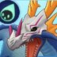

- 세대
- 성숙기
- 종족
 백신
백신- 속성
 바람
바람- 소비 메모리
- 6
- 장비 슬롯
- 2
스테이터스 (Lv.99)
HP163045위/81
SP11670위/81
ATK19027위/81
INT12552위/81
DEF15930위/81
SPD16732위/81
막대 길이는 등록된 디지몬 중 최고값 대비 비율이에요. 순위는 스테이터스가 등록된 디지몬끼리 비교해요.
필살기 1
스피닝 니들 바람 SP 10
적 전체물리위력 45
디지몬 속성과 같음SS 보너스 +15%
적 전체에 바람속성 위력 45의 물리공격.
SS(서포트스킬)
윈드 가디언즈
바람속성 스킬의 대미지가 15% 증가한다.
계승기 (레벨업 습득) 3
이 디지몬이 레벨업으로 배우는 스킬이에요. 배운 스킬은 진화·퇴화해도 계속 쓸 수 있어요.
| 습득 Lv | 스킬 | 속성 | SP |
|---|---|---|---|
| 10 | 소닉 보이드 II 적 1체에 바람속성 위력 75의 마법공격. 명중률 95%. | 6 | |
| 18 | 게일 스톰 I 적 전체에 바람속성 위력 30의 물리공격. 명중률 95%. | 4 | |
| 25 | 볼케 네이팜 II 적 1체에 불속성 위력 85의 물리공격. 명중률 95%. | 6 |
이 디지몬이 강한 상대
상대 종족(세로)과 속성(가로)별로 이 디지몬의 공격 필살기 중 가장 높은 배율이에요. 칸에 마우스를 올리면 계산 근거가 보여요.
×3 이상×2 이상보통×1 미만
| 상대 ↓ / → | |||||||||
|---|---|---|---|---|---|---|---|---|---|
| 백신 | ×1.15 | ×1.15 | ×1.15 | ×1.15 | ×1.15 | ×1.73 | ×1.15 | ×1.15 | ×1.15 |
| 데이터 | ×0.57 | ×0.57 | ×0.57 | ×0.57 | ×0.57 | ×0.86 | ×0.57 | ×0.57 | ×0.57 |
| 바이러스 | ×2.30 | ×2.30 | ×2.30 | ×2.30 | ×2.30 | ×3.45 | ×2.30 | ×2.30 | ×2.30 |
| 프리 | ×1.15 | ×1.15 | ×1.15 | ×1.15 | ×1.15 | ×1.73 | ×1.15 | ×1.15 | ×1.15 |
등록된 디지몬 중 ×2 이상으로 공격할 수 있는 상대 114마리
성숙기 같은 세대 31 · 다른 세대 상대는 도감에서 볼 수 있어요.
레어몬×3.45록몬×3.45모야몬×3.45사이크로몬×3.45스카몬×3.45우가몬×3.45워매몬×3.45코어드라몬(녹)×3.45가드로몬×2.30가루몬(흑)×2.30개굴몬×2.30고스몬×2.30골드워매몬×2.30그라우몬×2.30그레이몬(청)×2.30달팽이워매몬×2.30데블몬×2.30말벌몬×2.30베지몬×2.30블랙가트몬×2.30상굴몬×2.30시스터몬 느와르×2.30시스터몬 시엘×2.30시스터몬C(각성)×2.30시스터몬N(각성)×2.30아이스데블몬×2.30알카디몬 성숙기×2.30옐로우워매몬×2.30우드몬×2.30쿠가몬×2.30화이트스카몬×2.30
진화 가능 디지몬 4

윙드라몬
- 레벨 30 이상
- 공격력이 80 필요
- 민첩이 95 필요
- 재능이 10 필요
메가시드라몬
- 레벨 30 이상
- 최대 HP가 400 필요
- 최대 SP가 70 필요
- 지력이 70 필요
메가드라몬
- 레벨 26 이상
- 최대 HP가 400 필요
- 공격력이 95 필요
- 민첩이 75 필요
메탈그레이몬
- 레벨 30 이상
- 최대 HP가 350 필요
- 공격력이 100 필요
- 우정이 50% 필요
진화 트리 · 에어드라몬까지 오는 길 + 다음 진화
왼쪽부터 진화 순서예요. 에어드라몬 오른쪽(점선 칸)은 바로 다음 진화 1단계예요. 그 뒤가 궁금하면 그 디지몬을 눌러 따라가 보세요. 선은 출발하는 디지몬의 색을 따라가요. 디지몬을 한 번 누르면 거기서 에어드라몬까지 가는 경로만 남고, 한 번 더 누르면 그 디지몬 페이지로 이동해요. 회색 칸은 아직 정보가 없는 디지몬이에요.
🧭 도감에서 에어드라몬 진화 루트 찾기